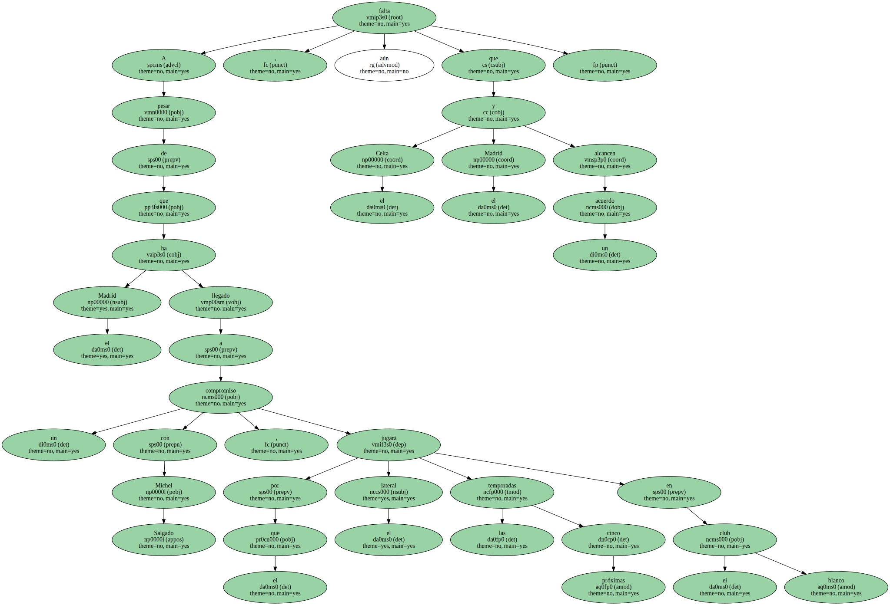
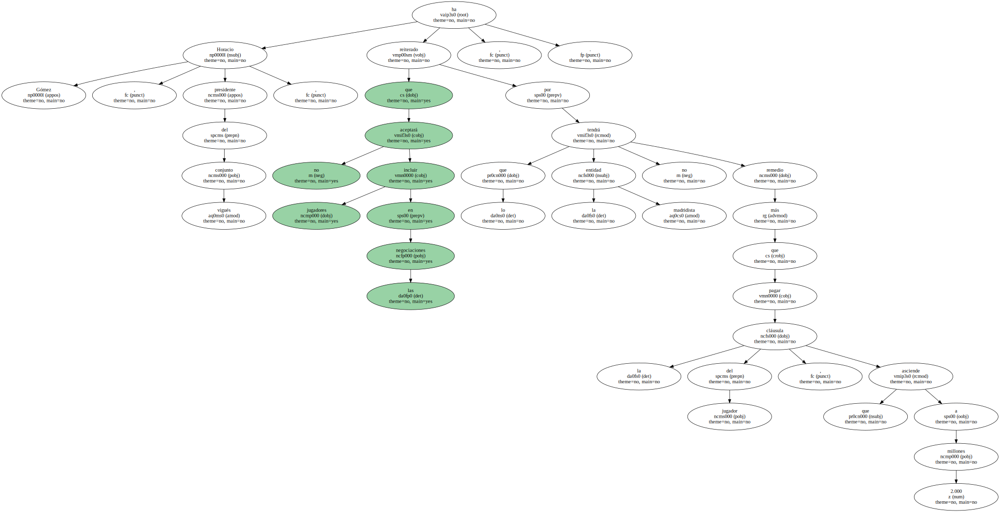
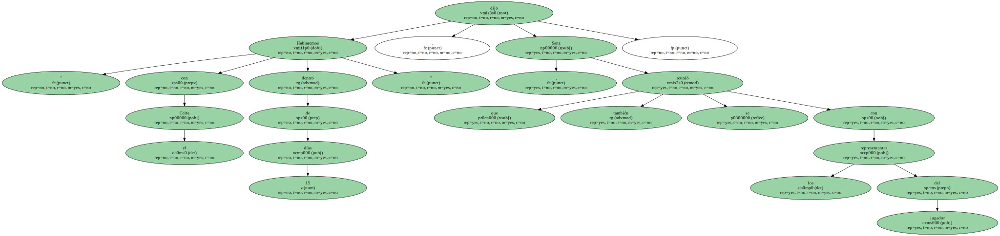
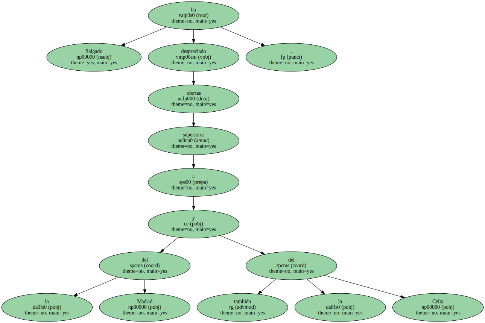

A pesar de que el Madrid ha llegado a un compromiso con Michel Salgado , por el que el lateral jugará las próximas cinco temporadas en el club blanco , aún falta que el Celta y el Madrid alcancen un acuerdo.
Horacio Gómez , presidente del conjunto vigués , ha reiterado que no aceptará incluir jugadores en las negociaciones , por lo que la entidad madridista no tendrá más remedio que pagar la cláusula del jugador , que asciende a 2.000 millones.
Tanto el presidente del Celta como el jugador han decidido aparcar el asunto hasta el final de temporada.

" Hablaremos con el Celta dentro de 15 días " , dijo Sanz , que también se reunió con los representantes del jugador.
Salgado ha despreciado ofertas superiores a la del Madrid y también la del Celta.
